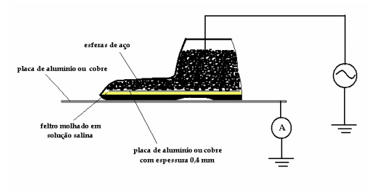

Nós da E&S somos experientes em trabalhos de ensaios elétricos em equipamentos de proteção individual (EPI) e coletiva (EPC) com características isolantes.
Através dos ensaios elétricos é possível analisar as caraterísticas isolante e a capacidade isolante dos equipamentos que são utilizados para a proteção individual e coletiva dos envolvidos; É imprescindível seguir os padrões do sistema da qualidade da NBR - ISO/IEC 17025 (Norma de Competência para Laboratório de Ensaio e Calibração). Os instrumentos envolvidos para a realização dos testes são calibrados e possuem rastreabilidade através da RBC (Rede Brasileira de Calibração), esses ensaios elétricos não podem faltar, pois os equipamentos de proteções são indispensáveis para os serviços em redes em geral e circuitos energizados.
Na portaria 598/04 da norma regulamentadora 10 (NR-10) determina os ensaios que devem ser efetuados; Veja os itens da NR-10 abaixo:
- Item 10.2.4 alinea "e", Os estabelecimentos com carga instalada superior a 75kW devem possuir os resultados dos testes de isolação elétrica realizados em equipamentos de proteção individual e coletiva;
- Item 10.4.3.1, Os equipamentos, dispositivos e ferramentas que possuam isolamento elétrico devem estar adequados as tensões envolvidas, e serem inspecionados e testados de acordo com as regulametações existentes ou recomendações do fabricante;
- Item 10.7.8, Os equipamentos, ferramentas e dispositivos isolantes ou equipados com materiais isolantes , destinados ao trabalho em alta tensão, devem ser submetidos a testes elétricos ou ensaios de laboratório periódicos, obedecendo-se as especificações do fabricante, os procedimentos da empresa e na ausencia desses anualmente.
É imperativo que os ensaios elétricos sejam realizados nos EPÍS e EPC´S para que profissionais se sintam seguros para operar os equipamentos elétricos pertencentes ao sistema.
Por que devo contratar um serviço de ensaios elétricos em EPI´S e EPC´S?
A Delegacia Regional do Trabalho (DRT) realiza auditorias com base na legislação a fim de garantir que os equipamentos estejam devidamente ensaiados, na falta dos laudos dos ensaios podem notificar, bem como multar os responsáveis, gerando assim prejuízo financeiro as empresas.
Quais os equipamentos mais ensaiados?
- Luva Isolante de Borracha
- Manga Isolante de Borracha
- Bastão e Vara de Manobra Isolante
- Calçado de Proteção Solado Isolante
- Estrado/Tapete Isolante de Borracha
- Ferramenta Manual Isolante
- Capacete de Segurança
- Banqueta isolada
- Andaime isolado
- Plataforma isolada
- Cobertura protetora rígida
- Cobertura protetora flexível
- Vara Telescópica
- Bastão de Salvamento
- Detectores de tensão
- Escadas isolantes
Qual a periodicidade dos ensaios?
Segue-se primordialmente as especificações do fabricante, procedimentos de segurança internos da empresa contratante, e na falta desses os ensaios elétricos são realizados preferencialmente uma vez ao ano.
